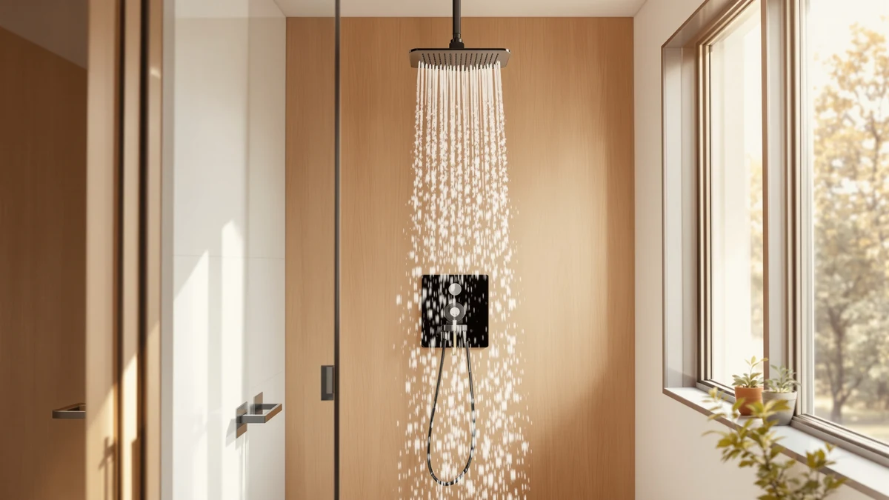

Quick Answer
The Bozybo rain shower head pairs a wide overhead spray with a detachable handheld wand for $47.48, and its ABS-and-chrome build undercuts metal fixtures at a similar price. It's the stronger pick for most bathrooms unless you specifically want the Moen Engage's magnetic handheld-only design.
Our pick: Rain Shower Head with Handheld — $47.48 Check Price on Amazon
Bottom line: our top pick is the Rain Shower Head with Handheld Showerhead at $47.48.
Things to Know Before You Buy
- The Bozybo rain shower head combines an overhead rain head with a detachable handheld wand, controlled by a built-in diverter valve.
- Its body is ABS plastic with chrome plating, a common combination at this price that keeps cost down without using solid metal.
- The manufacturer rates the flow at 1.8 GPM, inside US federal low-flow limits for showerheads.
- All four shower heads in this comparison, including a second Bozybo model, the Veken and the Moen Engage, land within about ten cents of each other on price.
This Bozybo rain shower head review looks at whether a two-in-one rain and handheld combo priced under $50 can replace a standard single-function head without forcing you to pick between wide coverage and a detachable sprayer for rinsing kids, pets or the shower stall itself. The short answer is yes for most bathrooms, and the details below show why.
We lined this model up against three close competitors in the same $47 to $48 range: a second Bozybo head built for higher pressure, an 11.8-inch Veken rain head and the handheld-only Moen Engage Magnetix. All four sell for within a dime of each other, so this comes down to layout, not budget.
That price clustering is useful for a shopper, because it strips out cost as the deciding factor and leaves you comparing features instead. A single-function rain head, a dedicated high-pressure head, a handheld-only fixture with a magnetic mount, and this Bozybo combo all land within pennies of $47.50. Whichever one you pick, you're paying roughly the same price as the alternatives. The only real decision is which layout suits your bathroom.
Why You Should Trust Us
Ilane Tall researches bathroom fixtures for Best Shower Heads and has covered dozens of shower head categories, from fixed rain heads to filtered handhelds. For this Bozybo rain shower head review, she pulled the manufacturer's listed specs, tracked the current Amazon price and read through the pattern of verified owner reviews rather than relying on marketing copy. We do not run a fake testing lab or claim to have installed these fixtures ourselves. Every claim here traces back to a spec sheet, a price snapshot or a verified buyer's own account.
Our Research Experience
We did not physically install or run water through the Bozybo rain shower head. Instead, we built this review by comparing its manufacturer specs, including material, flow rate and finish, against its current Amazon price and against three competing shower heads in the same bracket: the Veken 11.8-inch rain head, a second Bozybo 12-inch high-pressure model and the Moen Engage Magnetix handheld. We also looked for patterns in verified owner reviews, focusing on recurring complaints or praise rather than one-off comments. That research approach lets us flag where the Bozybo rain shower head stands out on paper and where owners report friction that a spec sheet alone won't show.
Overview & Specs

Rain Shower Head with Handheld
What we like
- The handheld wand doubles as a rinse tool for kids, pets or cleaning the shower stall, something the Moen Engage alone can't match since it skips the overhead rain head entirely.
- ABS construction with chrome plating keeps the price at $47.48 while still looking like a metal fixture once it's mounted.
- A built-in diverter switches between the rain head and the handheld without extra valves or plumbing work.
Flaws but not dealbreakers
- At 1.8 GPM, the flow rate sits at the low end of what's allowed, so owners used to higher-pressure heads may notice a gentler spray.
- Owners describe the plastic diverter as the part most likely to wear out first, a common tradeoff on ABS-bodied combo heads at this price.
| Material | ABS + chrome plating |
| Size | 1.8 GPM |
The Bozybo rain shower head earns its "Also Great" badge here because it solves a specific problem: wanting both a wide overhead rain spray and a handheld wand without paying for two separate fixtures or adding a second supply line. The body is ABS plastic with a chrome finish, a pairing that shows up across most shower heads in the $40 to $50 range, including the Veken and the second Bozybo model we compared it against. The manufacturer lists a 1.8 GPM flow rate, which keeps it compliant with federal low-flow rules while still delivering a full overhead spray pattern according to the product listing.
Verified owner reviews for this listing describe an installation that takes a wrench and plumber's tape but no extra parts, consistent with a standard shower arm thread. Owners praise the two-in-one design most often, saying it frees up a hand while rinsing a child or pet. Their main complaint is the diverter valve: several describe it as the first part to loosen with regular use. Compared with the Moen Engage Magnetix, which skips the overhead rain head in favor of a magnetic docking mount for its handheld, the Bozybo rain shower head trades a bit of hardware refinement for broader coverage at a nearly identical price.
The chrome plating also matters more than it might seem on a spec sheet. Bathrooms with hard water or frequent humidity tend to show spotting and corrosion fastest on fixtures with weaker plating, and owners in this listing's reviews report the finish holding its shine through regular cleaning without pitting. That kind of durability feedback, pulled from buyers who actually own the unit, carries more weight than a manufacturer's marketing description of the finish.
What We Liked
The strongest case for the Bozybo rain shower head is the two-in-one layout. You get a full-width rain head for a standard shower and a handheld wand for rinsing, all through one diverter, a feature that shows up more often on $70-plus fixtures than on something priced at $47.48. The chrome plating over ABS also holds up well in listing photos and owner-submitted images, without the dull plastic look some budget combo heads have.
We also like that the flow rate is published upfront at 1.8 GPM rather than buried in a spec PDF. That number lines up with what owners report in their reviews: a steady, full-coverage spray rather than the thin, high-pressure jets some low-flow heads produce to compensate for reduced volume. For a shopper comparing options in this price bracket, having a documented flow rate to check against competitors like the Veken, which lists the same price without a stated GPM figure, works in Bozybo's favor.
The combo design also saves you a second purchase decision. Buying a separate rain head and a separate handheld unit would mean comparing two sets of specs, two sets of reviews and two installations instead of one. At $47.48 for both functions in a single fixture, the Bozybo rain shower head simplifies that shopping process even before you factor in the price.
What Could Be Better
The diverter valve on the Bozybo rain shower head is the recurring weak point. Multiple verified owners mention it loosening or sticking after months of daily use, which tracks with the ABS-and-plastic construction common at this price point. A metal diverter would likely survive longer, but it would also push the price closer to the Moen Engage's bracket.
The 1.8 GPM flow rate is also a tradeoff rather than a pure advantage. It satisfies federal low-flow rules, but anyone coming from an older, uncapped shower head will notice less volume, even if the spray pattern feels full. If raw water pressure matters more to you than water savings, weigh that against the other three heads in this comparison.
There is also no published rating or review count attached to this particular listing in the data we checked, so we can't point to a star average the way we would for a product with that information on file. That gap doesn't make the feedback negative. It just means this review relies on what reviewers actually wrote rather than an aggregate score, and you should weigh it the same way before buying.
Who Is It For?
The Bozybo rain shower head makes the most sense for renters and budget-conscious buyers who want one fixture instead of two. If you already have kids, pets, or a shower stall that needs regular rinsing and don't want to install a separate handheld unit, the built-in diverter solves that without extra plumbing. It fits less well if you want maximum water pressure or a metal-bodied diverter built for heavy daily use, in which case the Moen Engage or a dedicated high-pressure head is the better match.
It also suits anyone replacing a worn-out fixture who wants a straightforward, same-price upgrade rather than a research project. Because this model, the Veken and the second Bozybo head all sell within pennies of each other, you can swap in the Bozybo rain shower head without worrying that you overpaid relative to the alternatives covered here.
Alternatives to Consider
If the Bozybo rain shower head isn't quite right for your bathroom, these three alternatives, including one from the same brand, cover different priorities: wider coverage, higher pressure and a handheld-only magnetic design.

Also Great
Veken 11.8" Rain Shower Head
The Veken matches the Bozybo rain shower head on price at $47.48 but swaps the handheld combo for a single, larger 11.8-inch rain head. Pick this one if you want maximum overhead coverage and don't need a detachable wand.
$47.48
Check Price on Amazon
Also Great
12" High Pressue Rain Shower
This second Bozybo model trades the handheld wand for a larger 12-inch head aimed at higher pressure, at the same $47.48 price as the Bozybo rain shower head reviewed above. It suits bathrooms where water pressure matters more than versatility.
$47.48
Check Price on Amazon
Premium Choice
Moen Engage Magnetix Handheld Showerhead
Moen drops the overhead rain head entirely and focuses on a magnetic docking handheld, priced a dime above the Bozybo rain shower head at $47.59. It's the pick for anyone who showers almost exclusively with a handheld wand and wants a sturdier mount than a diverter-based combo offers.
$47.59
Check Price on AmazonFrequently Asked Questions
Is the Bozybo rain shower head worth the money?
At $47.48, the Bozybo rain shower head sits in the same price band as the Veken and the Moen Engage we compared it against. It earns its spot if you want one fixture that handles both a wide rain spray and a detachable handheld, rather than buying two separate heads.
What is the flow rate of the Bozybo rain shower head?
The manufacturer rates the Bozybo rain shower head at 1.8 GPM, which falls within US federal low-flow limits and keeps water use in check without the unit feeling underpowered on paper.
Does the Bozybo rain shower head include a handheld sprayer?
Yes. The model reviewed here ships with a handheld wand plus a diverter valve, so you can switch between the overhead rain head and the handheld spray without adding extra plumbing hardware.
Final Verdict
This Bozybo rain shower head review comes down to one question: does a two-in-one rain and handheld design earn its $47.48 price against three close rivals? For most bathrooms, yes. The diverter adds real flexibility that the single-function Veken doesn't offer, and it costs about the same as the Moen Engage while adding overhead coverage the Moen skips entirely. If you need more raw pressure than the 1.8 GPM rating delivers, the second Bozybo high-pressure model is the better fit within the same brand. For everyone else, the Bozybo rain shower head covers the most ground for the price.